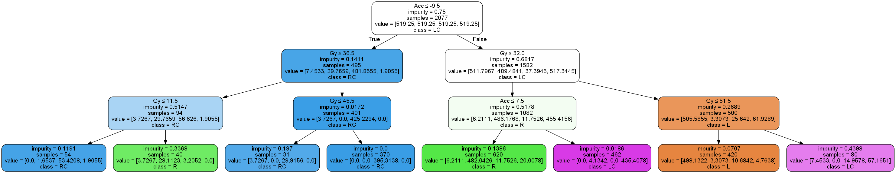

Graphviz是一個運用命令行繪圖的軟體，它能直接陳述「關係圖」上的節點、邊、方向等性質。Graphviz提供許多圖片種類，可以在官網中挖到更多寶!
今天的主題想利用Graphviz搭配Python，將decision tree的結構圖做視覺化呈現(如上圖)。
Install Graphviz
首先，來這裡下載作業系統對應的graphviz。
安裝成功後，進行環境變數的新增: 控制台\進階系統設定\環境變數，在PATH中新增以下到最後面
;C:\Program Files (x86)\Graphviz2.38\bin
在Command Line中輸入 dot -V，如果成功會返回
dot - graphviz version 2.38.0 (20140413.2041)
Plot Decision Tree
確定graphviz安裝完成後，我們就可以將訓練好的decision tree畫出來，以上是用sklearn的tree來做示範。
訓練完模型後，可以執行tree.export_graphviz來產生一個treepic2.dot文件，接著在Command Line輸入
dot -T png treepic.dot -o out.png
完成後，資料夾就會出現一張decision tree的圖 !